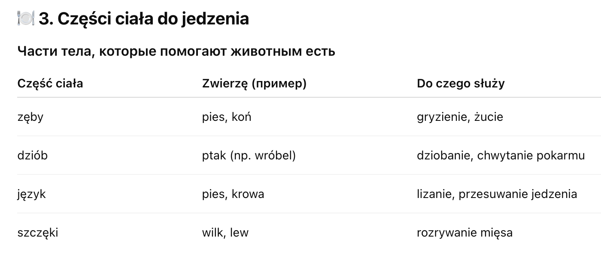

Przyroda > Świat zwierząt > Odżywianie zwierząt
Świat zwierząt
🥕 Odżywianie zwierząt
(Питание животных)
🐾 1. Dlaczego zwierzęta jedzą?
-
Почему животные едят?
- rosnąć – расти
- mieć energię – иметь энергию
- rosną – растут
- żyć i poruszać się – жить и двигаться
Так же как и люди, zwierzęta potrzebują jedzenia, чтобы:
🍎 2. Co jedzą zwierzęta?
-
Животные питаются по-разному. Их можно разделить на три основные группы:
-
🌿 Roślinożercy – Травоядные
– jedzą rośliny (растения): trawę, liście, owoce, korę
Примеры: koń, krowa, królik, sarna, żółw
-
🍖 Mięsożercy – Плотоядные
– jedzą mięso innych zwierząt
Примеры: wilk, lis, sowa, kot, ryś
-
🌿🍗 Wszystkożercy – Всеядные
– jedzą rośliny i mięso
Примеры: człowiek, niedźwiedź, świnia, pies

🌱 4. Skąd zwierzęta biorą jedzenie?
- Na wolności – охотятся, собирают растения
- W gospodarstwie/domach – кормят люди
- W lesie, łące, wodzie – по месту обитания